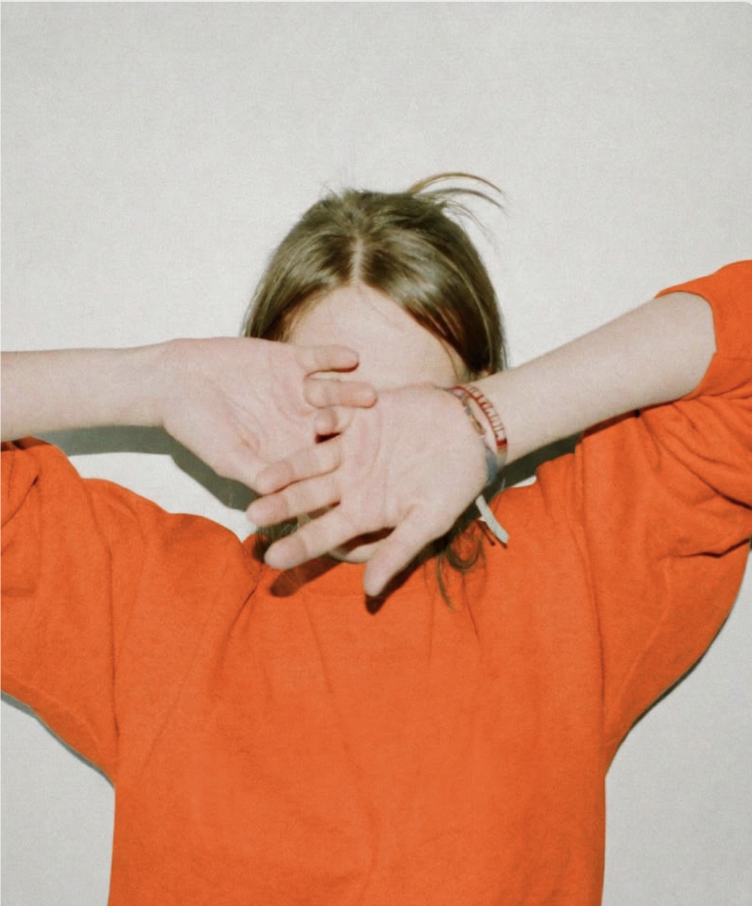
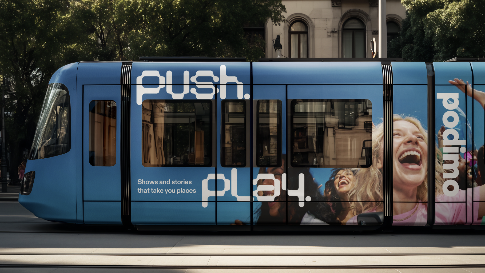
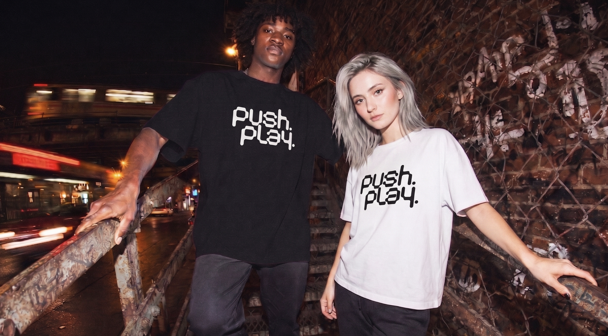
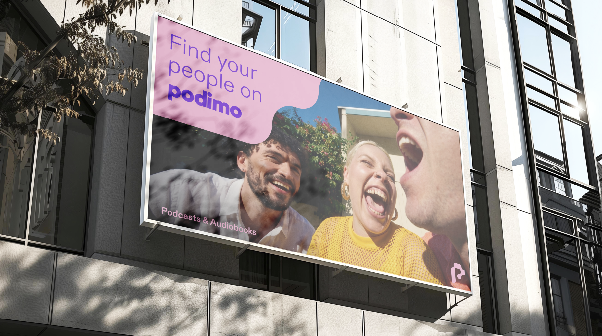

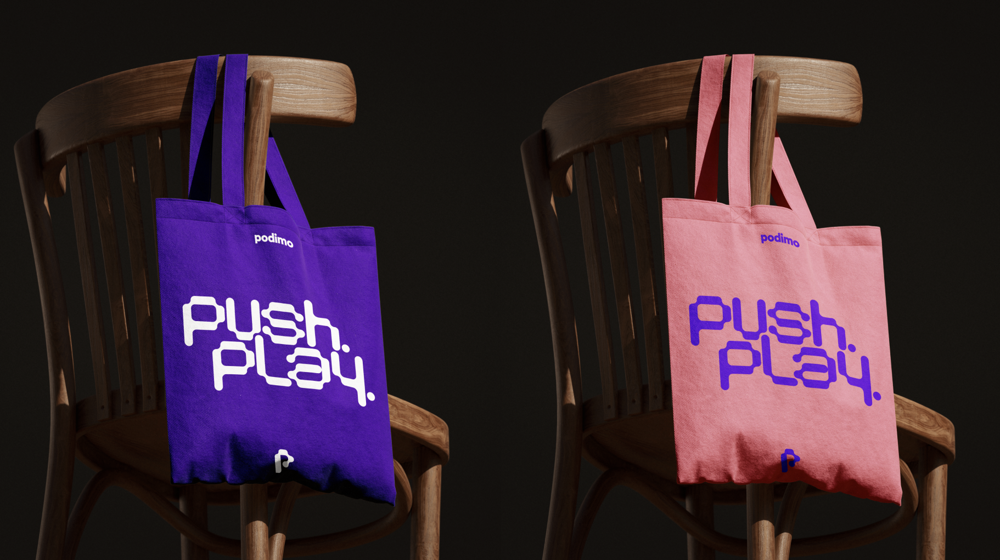
Starting with this one.
Podcasts grew up. They moved from audio into video, live events, and full-spectrum media, and the platforms winning the category now behave like entertainment houses. Podimo's master brand had to move with them: a complete overhaul, launching now, that replaces a visual direction with a full brand strategy and system.
Podimo is no longer an audio property, because podcasts aren't. The category consolidated into a media business spanning podcast, audio, video, and live events, with the strongest players building entire show universes across platforms. To drive ambitious growth and M&A across existing and new markets, the company needed brand clarity and brand flexibility, and an identity born as an audio app could deliver neither.
The old identity was a visual direction. The overhaul replaces it with the full stack: purpose, positioning, pillars, personality, tone of voice and visuals, and a dynamic design system, built to live in entertainment.
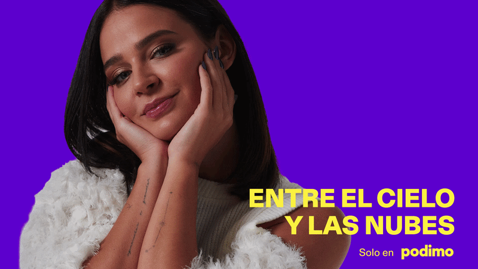
The strategy used to rest on a purpose that belonged to a time when podcasts were purely audio: enriching lives through listening. I built that into a new active idea: we create the conversations that connect us. Podimo builds communities through content, producing and promoting hyper-local, ultra-relevant shows enabled by technology that brings creators and audiences closer together.
Three pillars carry it: Content created and curated for every mood, Culture by driving the local conversation on its own terms, and Community designed for finding your people. The differentiation is equally sharp: creator-centric, hyper-local, and crafted and consolidated, the only European player owning the full value chain from production to monetisation. Or as the strategy puts it: what podcasts want to be when they grow up.
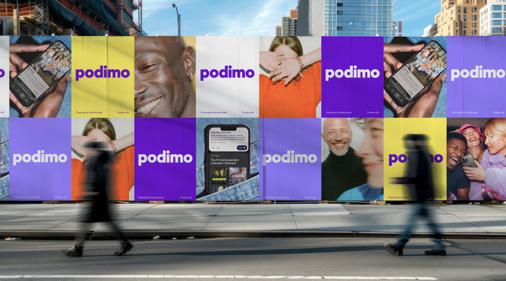
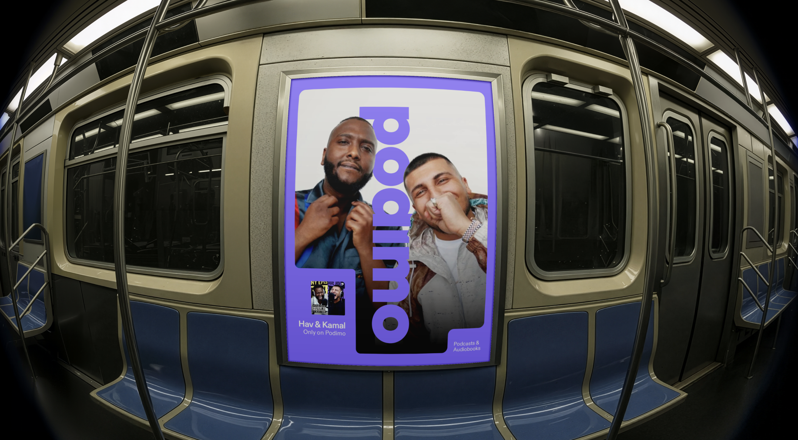
The brand personality is built on a simple stance: Podimo sets the conversation in motion. The system expresses it through a dynamic design language, bold typography, an electric palette, and a photographic tone that feels like being inside the moment rather than observing it, flexible enough for every market, every vertical, and every format the media house now spans.
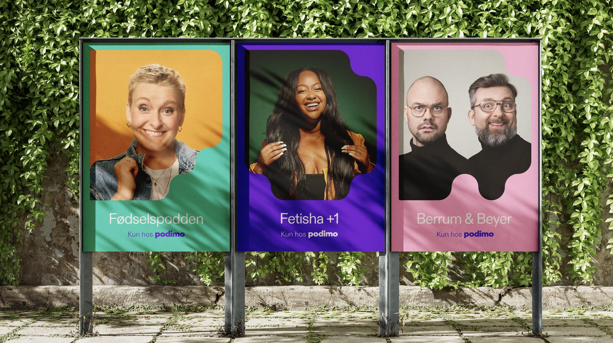
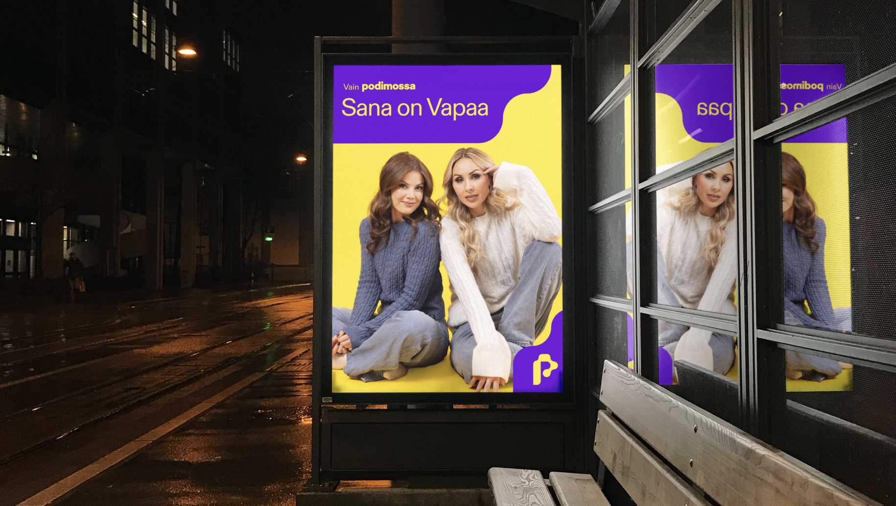
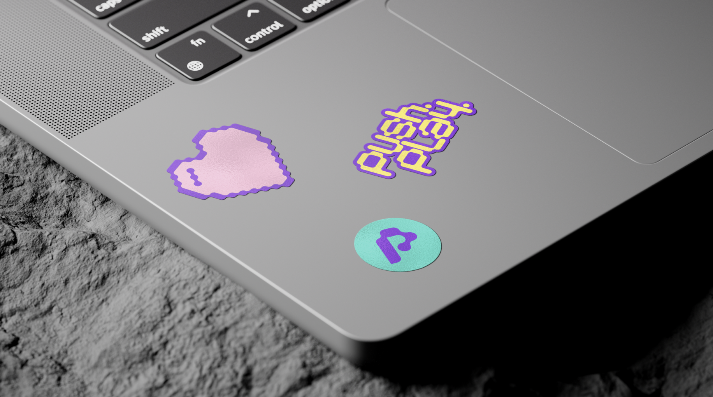
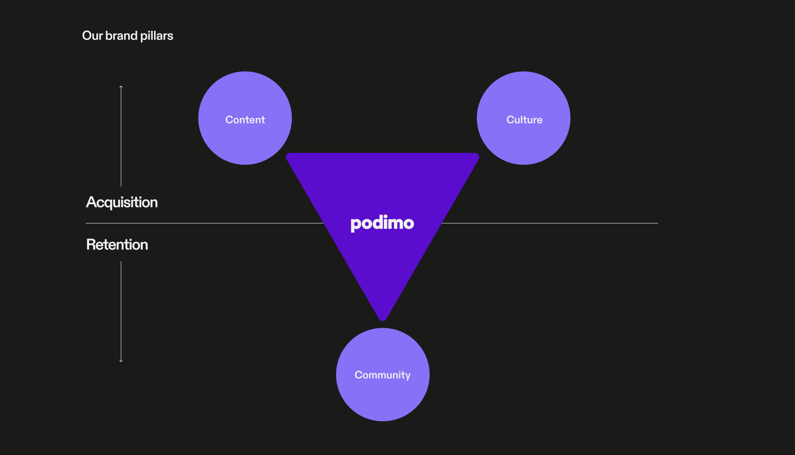
This master brand is the root of the Brand Systems lane: Podimo Studios speaks to creators from it, Sports on Podimo builds a vertical super-brand inside it, and every campaign from tentpoles to key moments executes through its design system. The arc that led here ran through Listen Better in 2024, which made listening the brand's cultural territory, and Reflect, which made the relationship personal, before the mandate formalised the lanes and the overhaul rebuilt the foundation they stand on.
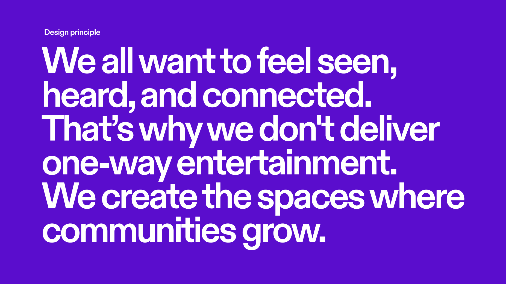





What the overhaul changes, launching across markets now: